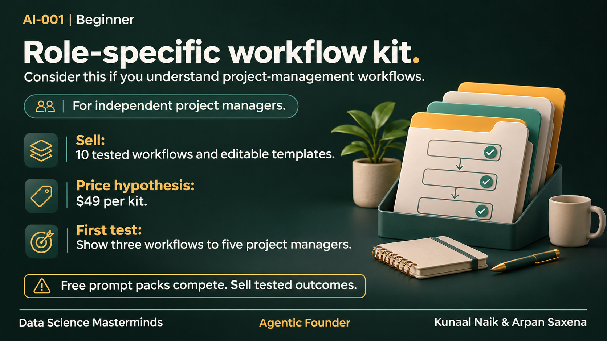

AI-001 · Digital products and professional knowledge
Role-specific workflow kit
Buyer: Independent project managers
Ten tested workflows, sample inputs, output checks and editable templates.
Assess: Clear writing, domain expertise, instructional design and basic spreadsheet skills.
Decide with a test: Offer a three-workflow sample to five project managers and seek three paid preorders.
Beginner · download · $49 price hypothesis · 1 assumed delivery/support hours per unit
Constraints and evidence
Generic prompt packs have many free substitutes; sell tested outcomes.
Medium: established delivery channels; individual products unvalidated.
Source IDs: S03, S12, S15, S21. Exact offer and price unvalidated.